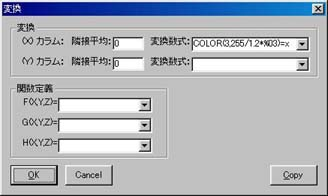
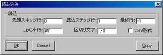
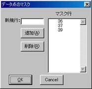
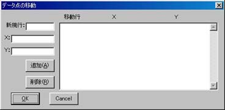

| ファイル名 |
データファイル名。
|
| ファイルから設定読込 |
データファイルの先頭に設定パラメターが記述されている場合に、そのパラメターを撮り込む。
データファイルへの設定パラメターの記述の方法はデータファイル埋め込みオプションを参照。
|
| (X)カラム |
横軸として使用するデータの、データファイルにおけるカラム数。
0の時は 1,2,3,... がデータとなる。
|
| (X)軸 |
横軸として使用する軸。
軸の通し番号(Axis Window の行先頭に表示される数字)で指定するが、コンボボックスのリストには軸の名前で一覧表示される。
|
| (Y)カラム |
縦軸として使用するデータの、データファイルにおけるカラム数。
0の時は 1,2,3,... がデータとなる。
|
| (Y)軸 |
縦軸として使用する軸。
軸の通し番号(Axis Window の行先頭に表示される数字)で指定するが、コンボボックスのリストには軸の名前で一覧表示される。
|
| タイプ |
mark, line 等のプロットする方法。
|
| mark->> |
タイプが mark の時にプロットに使われるマークの種類。
|
| curve->> |
タイプが curve の時に使われる補間方法。
spline(スプライン補間), spline_close(閉スプライン補間), bspline(Bスプライン補間), bspline_close(閉Bスプライン補間)。
Bスプライン補間を使うにはデータ数が7点以上必要。
|
| fit->> |
タイプが fit の時にフィッティングの方法を指定するダイアログボックスを開く。
タイプを fit にしたら必ず一度はこのボタンを押してフィッティング方法を指定しないと、
描画時に `fit' is not specified のエラーになる。
|
| 色1 |
プロットする線、マーク等の色。
|
| 色2 |
タイプが mark, rectangle_fill, bar_fill_x, bar_fill_y の時の第2色。
|
| クリップ |
チェックしない状態では、データは軸の外側にもプロットされる。
|
| 線種 |
プロットする線の種類。
点線の長さ、間隔を詳細に指定するには、"100 10" の様に点線の繰り返し要素の長さを指定する。
|
| 線幅 |
プロットする線の幅。
|
| サイズ |
マークの大きさ、エラーバーのバーの長さなどのサイズ。
|
| マイター |
マイターリミット。折れ線の角で輪郭をどこまで描画するかを決める。
|
| ジョイン |
折れ線の角の輪郭形状。
|
| 変換数式 |
| 隣接平均 |
隣接平均するデータ数。1 の時、前後1つのデータと合わせて3つのデータの平均がとられる。
|
| 変換数式 |
データを数式で変換してプロットしたい場合の変換式。
|
F(X,Y,Z)=
G(X,Y,Z)=
H(X,Y,Z)= |
ユーザ定義関数。ここで定義した関数が、変換数式中で F(), G(), H() として使用できる。
|
|

|
|
| 読込 |
| 先頭スキップ行 |
データファイルの先頭で読み込みをスキップさせる行数。
|
| 読込ステップ行 |
2の時、データファイルは一行おきに読み込まれる。
|
| 最終行 |
読み込みを停止させる行。-1 でファイルの最後まで読み込まれる。
|
| コメント行 |
ここで指定した文字で始まる行はコメント行とみなされ読み込まれない。
|
| 区切り文字 |
データの区切りとして使用される文字。デフォルトはスペース、タブ、コンマ、括弧。
|
| CSV形式 |
これをチェックすると、スペース以外の「区切り文字」が連続した場合、連続した数だけデータが無いものとして扱われる。
|
|

|
|
| マスク |
| 追加 |
「新規行」に指定したデータ行をマスクとして追加する。
マスクの追加はViewer Windowで モードを用い、マウスでプロットされたデータを指定することでも可能。 モードを用い、マウスでプロットされたデータを指定することでも可能。
|
| 削除 |
「マスク行」リストの中で選択したデータ行のマスクを解除する。
|
|

|
|
| 移動 |
| 追加 |
「新規行」に指定したデータ行のデータを「X, Y」で指定されるデータとして解釈するように「移動行」リストに追加する。
データの移動はViewer Windowでモードを用い、マウスでプロットされたデータを指定することでも可能。
|
| 削除 |
「移動行」リストの中で選択したデータ行のデータ移動を解除する。
|
|

|
|
| Edit |
データファイルを編集するためにエディターを開く。
起動されるエディターは[設定]-[その他]メニューで変更可能。
|
| Apply all |
ファイル選択ダイアログボックスで、複数のデータファイルを指定した場合、
これ以降のデータファイルに対しては現在の設定を用いる。
|
| Copy |
他のデータファイルの設定パラメターを取り込む。「数式変換」、「読込」、「マスク」、「移動」のパラメターはコピーされない。
|
| Copy All |
他のデータファイルの設定パラメターを取り込む。「数式変換」、「読込」、「マスク」、「移動」のパラメターもコピーされる。
|